공식 아이템 목록을 기준으로 정리했습니다. 총 152개. 팬 사이트 안내이며 게임과 다를 수 있습니다. 출처: 리니지 클래식 아이템
| 아이템 | AC | 효과 | 재질 | 무게 | 클래스 | 착용레벨 | 안전인첸 |
|---|---|---|---|---|---|---|---|
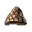 가죽모자 | 0 | — | 가죽 | 10 | 전체 | 0 | 0~4강 |
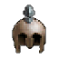 가죽투구 | 1 | — | 가죽 | 30 | 전체 | 0 | 0~4강 |
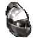 강철 면갑 | 3 | — | 철 | 50 | 기사 | 0 | 0~4강 |
| 기사의 두건 | 1 | — | 천 | 0 | 기사 | 0 | 인첸불가 |
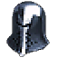 기사의 면갑 | 3 | — | 철 | 40 | 기사 | 0 | 0~4강 |
| 난쟁이족 철 투구 | 2 | — | 철 | 40 | 전체 | 0 | 0~4강 |
| 데스나이트의 투구 | 3 | — | 철 | 50 | 기사 | 0 | 0~4강 |
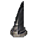 마법사 모자 | 2 | — | 천 | 20 | 마법사 | 0 | 0~4강 |
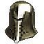 마법의 투구: 신속 | 1 | 신체 속도 마법, 마나 소모 절반 | 미스릴 | 50 | 군주 · 기사 | 0 | 0~4강 |
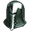 마법의 투구: 치유 | 1 | 치유 마법, 마나 소모 절반 | 미스릴 | 50 | 군주 · 기사 | 0 | 0~4강 |
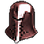 마법의 투구: 힘 | 1 | 힘과 권능 마법, 마나 소모 절반 | 미스릴 | 50 | 군주 · 기사 | 0 | 0~4강 |
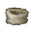 맘보 모자 | -1 | CHA +1 | 가죽 | 10 | 전체 | 0 | 0~4강 |
| 메르키오르의 모자 | 2 | INT +1 | 천 | 20 | 마법사 | 0 | 0~4강 |
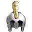 민첩함의 투구 | 1 | DEX +1 | 가죽 | 13 | 요정 | 15 | 0~6강 |
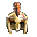 반왕의 투구 | 3 | — | 금 | 15 | 군주 | 0 | 0~4강 |
| 발터자르의 모자 | 2 | MP회복 +5 | 천 | 20 | 마법사 | 0 | 0~4강 |
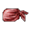 붉은 기사의 두건 | 2 | — | 천 | 20 | 기사 | 0 | 0~6강 |
| 세마의 모자 | 2 | MP회복 +2, 최대 MP +15 | 천 | 20 | 마법사 | 0 | 0~4강 |
| 엘름의 축복 | 2 | DEX +1 | 가죽 | 13 | 요정 | 0 | 0~6강 |
| 오크족 투구 | 1 | — | 철 | 30 | 전체 | 0 | 0~4강 |
| 요정족 가죽 투구 | 1 | — | 가죽 | 3 | 요정 · 마법사 | 0 | 0~6강 |
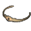 정화의 머리띠 | 0 | 오염된 바람 정령 시야 | 보석 | 0 | 요정 | 0 | 인첸불가 |
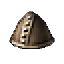 징박은 가죽모자 | 2 | — | 가죽 | 20 | 전체 | 0 | 0~4강 |
| 짙푸른 해적 두건 | 3 | — | 가죽 | 20 | 전체 | 0 | 0~4강 |
| 체력의 투구 | 1 | CON +1 | 가죽 | 13 | 요정 | 15 | 0~6강 |
| 카스파의 모자 | 2 | 최대 MP +25 | 천 | 20 | 마법사 | 0 | 0~4강 |
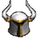 커츠의 투구 | 3 | — | 철 | 50 | 기사 | 0 | 0~4강 |
| 케레니스의 서클릿 | 3 | — | 백금 | 5 | 마법사 | 0 | 0~4강 |
| 투구 | 1 | — | 철 | 30 | 전체 | 0 | 0~4강 |
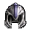 투구 | 2 | MR +4 | 철 | 35 | 전체 | 0 | 0~4강 |
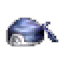 푸른 해적 두건 | 2 | — | 가죽 | 15 | 전체 | 0 | 0~4강 |
| 해골투구 | 3 | — | 뼈 | 30 | 전체 | 0 | 0 |
| 아이템 | AC | 효과 | 재질 | 무게 | 클래스 | 착용레벨 | 안전인첸 |
|---|---|---|---|---|---|---|---|
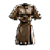 가죽 갑옷 | 2 | — | 가죽 | 70 | 전체 | 0 | 0~4강 |
| 가죽 재킷 | 1 | — | 가죽 | 30 | 전체 | 0 | 0~4강 |
| 가죽조끼 | 1 | — | 가죽 | 30 | 전체 | 0 | 0~4강 |
| 강철 판금 갑옷 | 7 | — | 철 | 470 | 기사 | 0 | 0~4강 |
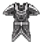 고대의 가죽 갑옷 | 14 | HP회복 +3, MP회복 +5 | 가죽 | 180 | 요정 | 40 | 인첸불가 |
| 고대의 로브 | 12 | MP회복 +8 | 천 | 30 | 마법사 | 40 | 인첸불가 |
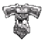 고대의 비늘 갑옷 | 14 | HP회복 +5, MP회복 +3 | 용가죽 | 200 | 군주 | 40 | 인첸불가 |
| 고대의 판금 갑옷 | 16 | HP회복 +1 | 철 | 280 | 기사 | 40 | 인첸불가 |
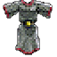 고리 갑옷 | 3 | — | 철 | 250 | 전체 | 0 | 0~4강 |
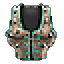 나무 갑옷 | 3 | — | 나무 | 80 | 전체 | 0 | 0~4강 |
| 나무 줄기 옷 | 1 | — | 나무 | 40 | 전체 | 0 | 0~4강 |
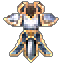 데스나이트의 갑옷 | 7 | — | 철 | 250 | 기사 | 0 | 0~4강 |
| 띠 갑옷 | 6 | — | 철 | 350 | 군주 · 기사 | 0 | 0~4강 |
| 린드비오르의 마갑주 | 11 | HP회복 +2, 대미지 감소 +1, 바람 속성 저항력 증가 +30 | 용가죽 | 250 | 전체 | 0 | 0~4강 |
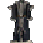 마법사 옷 | 3 | — | 천 | 60 | 마법사 | 0 | 0~4강 |
| 맘보 코트 | 3 | CHA +2, STR -1, 물 속성 저항력 증가 +10, 불 속성 저항력 증가 -10 | 가죽 | 10 | 전체 | 0 | 0~4강 |
| 무명 로브 | 2 | MR +4 | 천 | 10 | 전체 | 0 | 0~4강 |
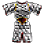 미늘 갑옷 | 6 | — | 철 | 400 | 군주 · 기사 | 0 | 0~4강 |
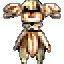 반왕의 갑옷 | 8 | — | 금 | 180 | 군주 | 0 | 0~4강 |
| 발라카스의 마갑주 | 11 | HP회복 +2, 대미지 감소 +1, 불 속성 저항력 증가 +30 | 용가죽 | 250 | 전체 | 0 | 0~4강 |
| 벨트달린 가죽조끼 | 3 | — | 가죽 | 50 | 전체 | 0 | 0~4강 |
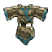 비늘 갑옷 | 4 | — | 철 | 250 | 군주 · 기사 · 요정 | 0 | 0~4강 |
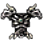 뼈갑옷 | 5 | — | 뼈 | 150 | 전체 | 0 | 0 |
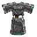 사슬 갑옷 | 5 | — | 철 | 300 | 군주 · 기사 · 요정 | 0 | 0~4강 |
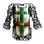 사슬 갑옷 | 5 | MR +4 | 철 | 300 | 군주 · 기사 · 요정 | 0 | 0~4강 |
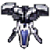 수룡 비늘 갑옷 | 9 | 물 속성 저항력 증가 +20 | 용가죽 | 300 | 전체 | 0 | 0~4강 |
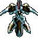 수정 갑옷 | 8 | — | 보석 | 350 | 군주 · 기사 · 요정 | 0 | 0~4강 |
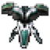 안타라스의 마갑주 | 11 | HP회복 +2, 대미지 감소 +1, 땅 속성 저항력 증가 +30 | 용가죽 | 250 | 전체 | 0 | 0~4강 |
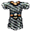 오크족 고리 갑옷 | 2 | — | 철 | 250 | 전체 | 0 | 0~4강 |
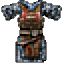 오크족 사슬 갑옷 | 4 | — | 철 | 300 | 군주 · 기사 · 요정 | 0 | 0~4강 |
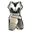 요정족 사슬 갑옷 | 5 | — | 미스릴 | 150 | 군주 · 기사 · 요정 | 0 | 0~6강 |
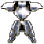 요정족 판금 갑옷 | 6 | — | 오리하루콘 | 250 | 기사 · 요정 | 0 | 0~6강 |
| 요정족 흉갑 | 4 | — | 미스릴 | 100 | 군주 · 기사 · 요정 | 0 | 0~6강 |
| 잊혀진 가죽 갑옷 | 1 | — | 가죽 | 200 | 요정 | 40 | 인첸불가 |
| 잊혀진 로브 | 1 | — | 천 | 50 | 마법사 | 40 | 인첸불가 |
| 잊혀진 비늘 갑옷 | 1 | — | 용가죽 | 250 | 군주 | 40 | 인첸불가 |
| 잊혀진 판금 갑옷 | 1 | — | 철 | 300 | 기사 | 40 | 인첸불가 |
| 중갑가죽조끼 | 3 | — | 가죽 | 150 | 전체 | 0 | 0~4강 |
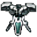 지룡 비늘 갑옷 | 9 | 땅 속성 저항력 증가 +20 | 용가죽 | 300 | 전체 | 0 | 0~4강 |
| 징박은 가죽조끼 | 2 | — | 가죽 | 130 | 전체 | 0 | 0~4강 |
| 징박힌 가죽 갑옷 | 3 | — | 가죽 | 150 | 전체 | 0 | 0~4강 |
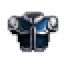 짙푸른 해적 가죽갑옷 | 7 | — | 가죽 | 160 | 전체 | 0 | 0~4강 |
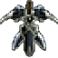 청동 판금 갑옷 | 6 | — | 구리 | 450 | 군주 · 기사 | 0 | 0~4강 |
| 커츠의 갑옷 | 7 | — | 철 | 250 | 기사 | 0 | 0~4강 |
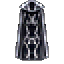 케레니스의 로브 | 5 | — | 은 | 85 | 마법사 | 0 | 0~4강 |
| 파푸리온의 마갑주 | 11 | HP회복 +2, 대미지 감소 +1, 물 속성 저항력 증가 +30 | 용가죽 | 250 | 전체 | 0 | 0~4강 |
| 판금 갑옷 | 7 | — | 철 | 450 | 군주 · 기사 | 0 | 0~4강 |
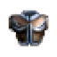 푸른 해적 가죽갑옷 | 5 | 최대 HP +10, INT +1, AC +1 | 가죽 | 150 | 전체 | 0 | 0~4강 |
| 풍룡 비늘 갑옷 | 9 | 바람 속성 저항력 증가 +20 | 용가죽 | 300 | 전체 | 0 | 0~4강 |
| 호박 갑옷 | 6 | HP회복 +3, MP회복 +2, 최대 HP +10, 최대 MP +10 | 나무 | 220 | 전체 | 0 | 0~4강 |
| 화룡 비늘 갑옷 | 9 | 불 속성 저항력 증가 +20 | 용가죽 | 300 | 전체 | 0 | 0~4강 |
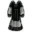 흑장로의 로브 | 5 | MP회복 +5, 최대 MP +50 | 천 | 30 | 마법사 | 0 | 0~4강 |
| 아이템 | AC | 효과 | 재질 | 무게 | 클래스 | 착용레벨 | 안전인첸 |
|---|---|---|---|---|---|---|---|
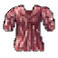 요정족 티셔츠 | 0 | — | 천 | 5 | 요정 | 0 | 0~6강 |
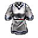 티셔츠 | 0 | 갑옷 안 착용 | 천 | 5 | 전체 | 0 | 0~4강 |
| 아이템 | AC | 효과 | 재질 | 무게 | 클래스 | 착용레벨 | 안전인첸 |
|---|---|---|---|---|---|---|---|
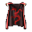 군주의 위엄 | 2 | CHA +1, CON +1, DEX +1, INT +1, STR +1, WIS +1 | 천 | 10 | 군주 | 15 | 0~4강 |
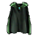 난쟁이족 망토 | 0 | — | 천 | 10 | 전체 | 0 | 0~4강 |
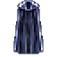 마나 망토 | 2 | MP회복 +5 | 천 | 10 | 마법사 | 45 | 0~4강 |
| 마법 망토 | 1 | MR +10 | 천 | 10 | 전체 | 0 | 0~4강 |
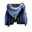 바다의 망토 | 2 | CHA +1 | 천 | 10 | 전체 | 0 | 0~4강 |
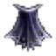 뱀파이어의 망토 | 2 | HP회복 +4, MR +3, 최대 HP +60 | 천 | 15 | 마법사 | 50 | 0~6강 |
| 보호 망토 | 3 | — | 천 | 10 | 전체 | 0 | 0~4강 |
| 붉은 망토 | 2 | CHA +1 | 천 | 10 | 군주 | 15 | 0~4강 |
| 오크족 망토 | 0 | — | 천 | 10 | 전체 | 0 | 0~4강 |
| 요정족 망토 | 1 | 요정 착용 시 HP회복 보너스 +1 | 천 | 10 | 전체 | 0 | 0~6강 |
| 투명 망토 | 1 | 투명 | 천 | 10 | 전체 | 5 | 0~4강 |
| 아이템 | AC | 효과 | 재질 | 무게 | 클래스 | 착용레벨 | 안전인첸 |
|---|---|---|---|---|---|---|---|
| 가죽부츠 | 2 | — | 가죽 | 10 | 전체 | 0 | 0~4강 |
| 가죽샌달 | 0 | — | 가죽 | 8 | 전체 | 0 | 0~4강 |
| 강철 부츠 | 3 | — | 철 | 50 | 전체 | 0 | 0~4강 |
| 데스나이트의 부츠 | 3 | — | 철 | 15 | 기사 | 0 | 0~4강 |
| 마나의 부츠 | 3 | MP회복 +2 | 가죽 | 15 | 마법사 | 0 | 0~4강 |
| 반왕의 부츠 | 3 | — | 금 | 12 | 군주 | 0 | 0~4강 |
| 부츠 | 2 | — | 가죽 | 15 | 전체 | 0 | 0~4강 |
| 세피아의 부츠 | 3 | 원거리 명중 +1 | 가죽 | 15 | 요정 | 0 | 0~4강 |
| 수중 부츠 | 2 | MP회복 +1, 수중 호흡 가능 | 가죽 | 15 | 전체 | 0 | 0~4강 |
| 신의의 부츠 | 3 | CHA +1 | 가죽 | 15 | 군주 | 0 | 0~4강 |
| 용기의 부츠 | 3 | 근거리 명중 +1 | 가죽 | 15 | 기사 | 0 | 0~4강 |
| 징박은 가죽샌달 | 1 | — | 가죽 | 10 | 전체 | 0 | 0~4강 |
| 짙푸른 해적 부츠 | 3 | — | 가죽 | 20 | 전체 | 0 | 0~4강 |
| 짧은 부츠 | 1 | — | 가죽 | 10 | 전체 | 0 | 0~4강 |
| 커츠의 부츠 | 3 | — | 철 | 15 | 기사 | 0 | 0~4강 |
| 케레니스의 부츠 | 2 | — | 가죽 | 15 | 마법사 | 0 | 0~4강 |
| 푸른 해적 부츠 | 2 | — | 가죽 | 15 | 전체 | 0 | 0~4강 |
| 흑장로의 샌달 | 2 | MP회복 +5, 최대 MP +25 | 가죽 | 10 | 마법사 | 0 | 0~4강 |
| 아이템 | AC | 효과 | 재질 | 무게 | 클래스 | 착용레벨 | 안전인첸 |
|---|---|---|---|---|---|---|---|
| 강철 장갑 | 1 | — | 철 | 40 | 전체 | 0 | 0~4강 |
| 데스나이트의 장갑 | 2 | — | 철 | 15 | 기사 | 0 | 0~4강 |
| 돌 장갑 | 3 | 대미지 감소 +1 | 광물 | 50 | 전체 | 0 | 0~4강 |
| 반왕의 건틀릿 | 2 | — | 금 | 10 | 군주 | 0 | 0~4강 |
| 보호 장갑 | 0 | 최대 HP +20, 최대 MP +10 | 가죽 | 10 | 요정 | 45 | 0~4강 |
| 빙령의 장갑 | 0 | MP회복 +1, STR +1, 물 속성 저항력 증가 +4 | 가죽 | 18 | 전체 | 0 | 0~4강 |
| 수정 장갑 | 3 | — | 보석 | 20 | 기사 | 0 | 0~4강 |
| 암령의 장갑 | 0 | MP회복 +1, STR +1, 땅 속성 저항력 증가 +4 | 가죽 | 18 | 전체 | 0 | 0~4강 |
| 염령의 장갑 | 0 | MP회복 +1, STR +1, 불 속성 저항력 증가 +4 | 가죽 | 18 | 전체 | 0 | 0~4강 |
| 장갑 | 0 | — | 가죽 | 10 | 전체 | 0 | 0~4강 |
| 짙푸른 해적 장갑 | 2 | — | 가죽 | 20 | 전체 | 0 | 0~4강 |
| 커츠의 장갑 | 2 | — | 철 | 15 | 기사 | 0 | 0~4강 |
| 케레니스의 장갑 | 1 | — | 가죽 | 8 | 마법사 | 0 | 0~4강 |
| 파워 글로브 | 0 | STR +2 | 가죽 | 18 | 전체 | 0 | 0~4강 |
| 푸른 해적 장갑 | 1 | — | 가죽 | 15 | 전체 | 0 | 0~4강 |
| 풍령의 장갑 | 0 | MP회복 +1, STR +1, 바람 속성 저항력 증가 +4 | 가죽 | 18 | 전체 | 0 | 0~4강 |
| 활 골무 | 0 | 원거리 명중 +2 | 가죽 | 10 | 기사 · 요정 | 0 | 0~4강 |
| 아이템 | AC | 효과 | 재질 | 무게 | 클래스 | 착용레벨 | 안전인첸 |
|---|---|---|---|---|---|---|---|
| 가죽방패 | 1 | — | 가죽 | 25 | 전체 | 0 | 0~4강 |
| 강철 방패 | 3 | — | 철 | 140 | 기사 | 0 | 0~4강 |
| 골각방패 | 3 | — | 뼈 | 30 | 전체 | 0 | 0 |
| 나무방패 | 1 | — | 나무 | 25 | 전체 | 0 | 0~4강 |
| 난쟁이족 둥근 방패 | 2 | — | 철 | 100 | 군주 · 기사 · 요정 | 0 | 0~4강 |
| 마나 수정구 | 2 | INT +1, 최대 MP +100 | 유리 | 50 | 마법사 | 0 | 0~4강 |
| 마력서 | 2 | INT +1 | 종이 | 20 | 마법사 | 15 | 0~4강 |
| 메두사 방패 | 2 | MR +5, 반사 효과 | 은 | 80 | 전체 | 0 | 0~4강 |
| 반사 방패 | 2 | 반사 효과 | 은 | 50 | 군주 · 기사 · 요정 | 0 | 0~4강 |
| 붉은 기사의 방패 | 2 | 반사 효과 | 은 | 50 | 기사 | 0 | 0~6강 |
| 사각 방패 | 3 | — | 철 | 120 | 기사 | 0 | 0~4강 |
| 시어의 심안 | 2 | INT +1, MP회복 +2, 반사 효과, 최대 MP +100 | 동물성 | 50 | 마법사 | 50 | 0~6강 |
| 에바의 방패 | 3 | 최대 HP +20, 헤이스트효과 | 은 | 50 | 전체 | 40 | 0~4강 |
| 요정족 방패 | 2 | 요정 착용 시 MR 보너스 +5 | 은 | 50 | 전체 | 0 | 0~6강 |
| 우럭하이 방패 | 1 | — | 철 | 50 | 전체 | 0 | 0~4강 |
| 은기사의 방패 | 2 | MR +4 | 은 | 100 | 기사 | 0 | 0~4강 |
| 작은 방패 | 1 | — | 나무 | 30 | 전체 | 0 | 0~4강 |
| 저주받은 마법서 | 1 | — | 종이 | 0 | 마법사 | 15 | 인첸불가 |
| 징박은 가죽방패 | 2 | — | 가죽 | 35 | 전체 | 0 | 0~4강 |
| 큰 방패 | 2 | — | 철 | 100 | 군주 · 기사 · 요정 | 0 | 0~4강 |